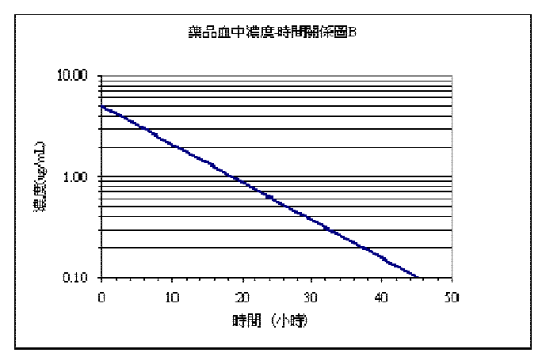
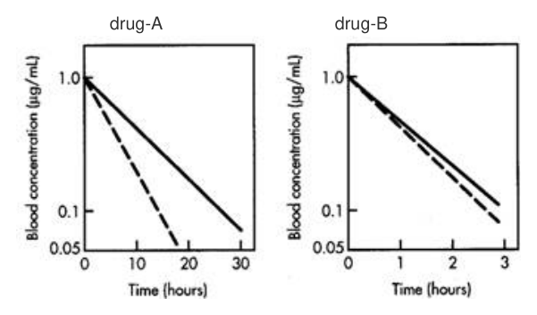
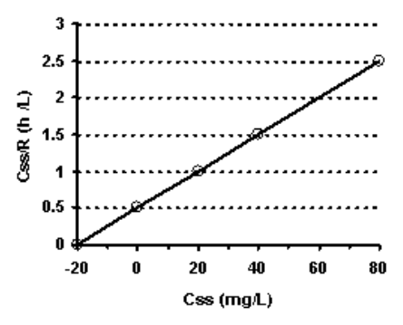

103 年第 2 次藥師藥劑學與生物藥劑學試題與答案
這一頁是民國 103 年第 2 次藥師藥劑學與生物藥劑學的整份歷屆試題，共 80 題，題目與標準答案出自考選部「國家考試試題及測驗式試題答案」開放資料。以下逐題列出題幹、選項與答案；要計時作答或記錄成績，請用線上練習。
考選部原始場次代碼：103090
線上作答這一科 →
全部 80 題
第 1 題待校
某一藥物（150 mg/mL）以零階次動力學降解，反應速率常數為2 mg/mL/h，請問該藥物到 達原濃度的80%需要多長的時間？
- （A）7.5 h
- （B）15.0 h
- （C）20.0 h
- （D）37.5 h
答案：（B）
第 2 題
最早提供依從性包裝（compliance packaging）之藥物產品是下列那一種？
- （A）抗生素
- （B）維生素
- （C）口服避孕藥
- （D）綜合感冒藥
答案：（C）
第 3 題
請問下列何者不是密度的表示方式？
- （A）lb/pint
- （B）grain/mL
- （C）g/inch
- （D）oz/gallon
答案：（C）
第 4 題
下列那兩種液體（liquids）所形成之溶液劑，需在一定比例下方可互溶？
- （A）乙醇與水（alcohol and water）
- （B）丙酮與水（acetone and water）
- （C）甘油與水（glycerin and water）
- （D）液體酚與水（liquefied phenol and water）
答案：（D）
第 5 題
在硫酸亞鐵糖漿劑（ferrous sulfate syrup, N.F.）中，可加入下列何者為安定劑？
- （A）碘化鉀（potassium iodide）
- （B）檸檬酸（citric acid）
- （C）甘油（glycerin）
- （D）酒精（alcohol）
答案：（B）
第 6 題
USP中甲醛溶液，於下列何種環境下，最容易生成白色的結晶？
- （A）高溫
- （B）高濕及高溫
- （C）低溫
- （D）低濕
答案：（C）
第 7 題
關於中華藥典第七版注射用水（water for injection）規格之敘述，下列何者錯誤？
- （A）本品每mL所含細菌內毒素不得超過0.25內毒素單位
- （B）只可以用蒸餾法製備
- （C）不可直接供注射
- （D）不得含有抑菌劑
答案：（B）
第 8 題
下列有關昇高界面活性劑濃度及其CMC（critical micelle concentration）影響溶液之敘述， 何者為正確？
- （A）界面活性劑濃度超過CMC後，溶液滲透壓會較緩慢上升
- （B）界面活性劑濃度未超過CMC，溶液當量導電性會較緩慢上升
- （C）界面活性劑濃度超過CMC後，溶液界面張力會較緩慢下降
- （D）界面活性劑濃度未超過CMC，溶液溶解度較緩慢下降
答案：（A）
第 9 題
假設此CH3(CH2)11OR之界面活劑，其R=(CH2CH2O)8H之曇點（cloud point）為37℃時，當 R改變為(CH2CH2O)20H基團時，曇點（cloud point）有可能為多少℃？
- （A）32
- （B）35
- （C）37
- （D）39
答案：（D）
第 10 題
下列有關界面活性劑HLB值大小，何者為正確？
- （A）Span 20 < Span 40 < Span 60 < Span 80
- （B）Tween 20 < Tween 40 < Tween 60 < Tween 80
- （C）Span 80 < Tween 20
- （D）Span 20 > Tween 20
答案：（C）
第 11 題
製備懸液劑時，可添加下列何物質，以降低質粒間的電性阻礙造成質粒凝集？
- （A）電解質
- （B）助懸劑
- （C）稠化劑
- （D）濕潤劑
答案：（A）
第 12 題
Type A gelatin之等電點（isoelectric point）範圍在pH多少？
- （A）1~3
- （B）4~6
- （C）7~9
- （D）11~13
答案：（C）
第 13 題
Chloropentafluoroethane可作為氣化噴霧劑之推動劑，其代號為Propellant：
- （A）216
- （B）215
- （C）126
- （D）115
答案：（D）
第 14 題
有些polymer在高濃度時對厭水性膠體有保護作用，但在低濃度時，反而促進凝結 （coagulation），此種現象稱為：
- （A）Sensitization
- （B）Steric stabilization
- （C）Charge stabilization
- （D）Protective action
答案：（A）
第 15 題
藥物自直腸吸收入體內的速率，不會受到下列那一種因素影響？
- （A）栓劑的形狀
- （B）基劑的組成
- （C）藥物的溶解度
- （D）直腸的內容物
答案：（A）
第 16 題
調製煤焦油軟膏時，下列何種調製次序所得之產品質地最佳？
- （A）氧化鋅→煤焦油→軟石蠟→澱粉
- （B）煤焦油→軟石蠟→氧化鋅→澱粉
- （C）氧化鋅→軟石蠟→澱粉→煤焦油
- （D）煤焦油→軟石蠟→澱粉→氧化鋅
答案：（C）
第 17 題
下列何種軟膏可完全不含油脂成分？
- （A）聚乙二醇軟膏（polyethylene glycol ointment）
- （B）白軟膏（white ointment）
- （C）親水軟膏（hydrophilic ointment）
- （D）消散乳霜（vanishing cream）
答案：（A）
第 18 題
消散乳霜（vanishing cream）基劑主要的油相成分為？
- （A）油酸（oleic acid）
- （B）硬脂酸（stearic acid）
- （C）礦物油（mineral oil）
- （D）蜜蠟（beeswax）
答案：（B）
第 19 題
最常被使用作為水溶性栓劑基劑的成分為？
- （A）丙二醇（propylene glycol）
- （B）聚乙二醇（polyethylene glycol）
- （C）乙醇（ethanol）
- （D）明膠（gelatin）
答案：（B）
第 20 題
軟膏水溶性基劑含下列那一成分？
- （A）軟石蠟
- （B）羊毛脂
- （C）蠟
- （D）聚乙二醇
答案：（D）
第 21 題
下列何者不是霜劑（creams）之基劑？
- （A）w/o乳劑
- （B）o/w乳劑
- （C）烴基基劑
- （D）水和性基劑
答案：（C）
第 22 題
使用栓劑模製備栓劑時，有些材料冷卻時會收縮，可與模分離而不需使用潤滑劑，但下列何 者必需在模上塗潤滑劑？
- （A）Witepsols
- （B）Glycerinated gelatin
- （C）Carbowaxes
- （D）Wecobees
答案：（B）
第 23 題
中華藥典第七版有關「甘油明膠栓劑」之敘述，下列何者錯誤？
- （A）製備法有捏合法、壓製法及熔合法
- （B）甘油含量約佔70%
- （C）製備時應小心混合，儘量避免混入空氣
- （D）應置於緊密容器內，於35℃以下貯之
答案：（A）
第 24 題
脆度表示錠片耐受操作包裝和運送過程所遭受磨損的能力，一般錠片可接受的最大脆度為多 少%？
- （A）1
- （B）2
- （C）3
- （D）4
答案：（A）
第 25 題
下列何種黏合劑（binders）可以非水溶液（non-aqueous solution）來進行溼式造粒？
- （A）Gelatin
- （B）Starch
- （C）Povidone
- （D）Glucose
答案：（C）
第 26 題
糖衣包覆（sugar coating）除了製程繁瑣費時且需要專家與錠片增重一倍等缺點外，其與膜 衣包覆（film coating）在兩者錠片性質方面尚有何最大差異？
- （A）藥物含量較不均一
- （B）錠片重量較不一致
- （C）整體外觀較不順眼
- （D）長期儲存較不安定
答案：（B）
第 27 題
符合中華藥典第七版規格之「生藥粗粉」，所有粉粒均應通過第幾號標準試驗篩？
- （A）20
- （B）40
- （C）60
- （D）100
答案：（A）
第 28 題
若以「顆粒劑」與「散劑」來比較，下列之敘述何者較正確？
- （A）於大氣中，散劑通常較不易受潮
- （B）於大氣中，顆粒劑通常較不易結塊或變硬
- （C）易飄浮之固體粉末，當欲臨用時加水使成液劑，則顆粒劑通常比散劑較不容易完成
- （D）藥物於水中不安定時，很適宜將其製成散劑，於臨用時加水使其溶解，而成溶液劑
答案：（B）
第 29 題
基於產品之安定性及成本之考量，下列有關於藥品之處理方式何者較適當？
- （A）以噴霧乾燥法除去「胰島素」之水分，以獲得其粉末
- （B）以乾熱法將「氧化鋅」粉末加熱至170℃，以進行滅菌
- （C）以凍晶乾燥方法將「甘草流浸膏」乾燥成粉末
- （D）以濾紙過濾法獲得「蛋白銀膠體」之固體粉末
答案：（B）
第 30 題
下列有關離子交換輸藥系統何者正確？
- （A）帶正電之交換樹脂（cationic resin）可和帶正電之藥物形成複合物（complex）
- （B）在交換樹脂藥物複合物外不適合加入包衣以免阻礙離子交換及藥物釋放
- （C）可利用形成樹脂-藥物複合物特性以遮蔽藥品之苦味
- （D）此系統藥物釋放速率取決於藥物之溶解度
答案：（C）
第 31 題
下列何種主成分的物理特性之改變對於錠片品質與功效影響最大，因此其變更必須先經藥政 主管機關的核准？
- （A）黏彈度（elasticity）
- （B）脆裂度（friability）
- （C）溶解度（solubility）
- （D）塑化度（plasticity）
答案：（C）
第 32 題
下列何者不屬於自然免疫（nature immunity）？
- （A）Passive immunity
- （B）Individual immunity
- （C）Racial immunity
- （D）Species immunity
答案：（A）
第 33 題
下列病原體中何者體積最小？
- （A）Influenza virus
- （B）Pseudomonas
- （C）Salmonella typhosa
- （D）Smallpox virus
答案：（A）
第 34 題
下列何者常用作為注射劑之抗氧化劑？
- （A）Acetic acid
- （B）Ascorbic acid
- （C）Citric acid
- （D）Phosphoric acid
答案：（B）
第 35 題
下列何者不屬於注射劑使用之抗氧化劑？
- （A）Ascorbic acid
- （B）Butylhydroxy anisole
- （C）Thimerosal
- （D）Tocopherol
答案：（C）
第 36 題
中華藥典眼用軟膏金屬粒檢查法中，檢測50 µm及以上各型粒子，第二階段檢查共用30個檢 品，其合格標準為30個檢品中含8粒以上者，不得超過a個，粒子總數不得超過b個，（a， b）為多少？
- （A）（1，5）
- （B）（1，50）
- （C）（3，50）
- （D）（3，150）
答案：（D）
第 37 題
下列四種胰島素相關注射產品當中，那一個藥效能維持最久？
- （A）Insulin aspart
- （B）Insulin glargine
- （C）Isophane（NPH）insulin
- （D）Regular insulin
答案：（B）
第 38 題
下列那一種水在中華藥典中要求無菌、無內毒素（含注射用水所有要求），但用途為僅供外 用？
- （A）Sterile water for injection
- （B）Purified water
- （C）Sterile purified water
- （D）Sterile water for irrigation
答案：（D）
第 39 題
下列製藥用防腐劑分類中，何者常因該類物質對水溶解度較差，而選用同類之兩種不同化合 物組合添加於製劑中，以達到應有之防腐效能？
- （A）Quaternary ammonium compounds
- （B）Organic mercurials
- （C）Parahydroxybenzoic acid esters
- （D）Substituted alcohols and phenols
答案：（C）
第 40 題
注射劑可添加苯甲醇（benzyl alcohol）作為抑菌劑的最大限度為何？
- （A）0.01%
- （B）0.5%
- （C）1%
- （D）2%
答案：（D）
第 41 題
採用濕熱法滅菌時，微生物減少的速率最接近何種級數化學反應？
- （A）0
- （B）1
- （C）2
- （D）3
答案：（B）
第 42 題
下列敘述何者錯誤？
- （A）乾熱滅菌約在160~170℃的溫度下操作
- （B）乾熱滅菌適用於玻璃器皿及外科器械的滅菌
- （C）乾熱滅菌較蒸氣滅菌有效
- （D）過濾滅菌可在低溫下進行
答案：（C）
第 43 題
依藥典規定，若以Coulter counter檢測一批大體積注射劑所含微粒物質，則其大於等於25 µm之微粒物質粒子數上限為何？
- （A）25/mL
- （B）12/mL
- （C）3/mL
- （D）2/mL
答案：（C）
第 44 題
無菌操作所用之層流設備（laminar airflow equipment）所提供之空氣，依規定其清淨度應具 有何種等級？
- （A）Class 10
- （B）Class 100
- （C）Class 1000
- （D）Class 10000
答案：（B）
第 45 題
下面除了那一狀況外，皆會延遲胃排空（gastric emptying）？
- （A）並服metoclopramide
- （B）激烈的運動
- （C）喝大量酒（未吐）
- （D）靠左側躺
答案：（A）
第 46 題
下列有關藥物代謝酵素的敘述何者最為正確？
- （A）Phase I反應屬於非合成性質反應
- （B）藥物必須先經phase I反應後，才會進行phase II反應
- （C）Amide conjugation為最常見之phaseⅡ反應
- （D）Acetylation及mercapturic acid conjugation可能造成毒性反應
答案：（D）
第 47 題
已知在α1-acid glycoprotein（AAG）轉殖鼠上，血漿AAG濃度為正常鼠的8.6倍。請預測下 面那一藥品之血中濃度在轉殖鼠上會升高，但在腦中的濃度會下降？
- （A）Imipramine
- （B）Salicylates
- （C）Phenylbutazone
- （D）Penicillins
答案：（A）
第 48 題
某藥物為一次動力學特性，半衰期為4小時，注射後60%以原型自尿中排出，則此藥之排泄 速率常數（ke，h-1）為：
- （A）0.17
- （B）0.12
- （C）0.10
- （D）0.07
答案：（C）
第 49 題
甲藥與乙藥的靜脈連續輸注速率、排除速率常數與清除率分別為10、20 mg/h；0.7、0.3 h- 1；8、16 L/h，下列敘述何者正確？
- （A）甲藥到達的穩定濃度為4.2 mg/L
- （B）乙藥到達的穩定濃度較甲藥低
- （C）甲藥到達其穩定濃度所需的時間會較長
- （D）乙藥到達其穩定濃度所需的時間會較長
答案：（D）
第 50 題
某藥物為一次藥物動力學特性，20%由肝臟代謝，今注射256 mg後經48小時，體內藥物殘餘 1 mg ，則此藥之排除速率常數（k，h-1）為若干？
- （A）0.115
- （B）0.092
- （C）0.069
- （D）0.023
答案：（A）
第 51 題
藥物在體內的動向（drug disposition）並不包括下列何種過程？
- （A）吸收
- （B）分布
- （C）代謝
- （D）排泄
答案：（A）
第 52 題
下列應用Loo-Riegelman方法計算口服藥物之吸收速率常數的敘述，何者錯誤？
- （A）以藥物未吸收分率與時間作圖
- （B）適用於二室藥物動力學的藥物
- （C）需要知道藥物的分布速率常數
- （D）不需要知道藥物的排除速率常數
答案：（D）
第 53 題
某藥品經靜脈注射後在體內動態依三室模式進行，其經時濃度變化以Cp=75e-2.5t+36e- 1.8t+21e-0.3t（Cp： mg/L，t： h）表示，則其血中濃度曲線下面積為若干mg．h/L？
- （A）100
- （B）120
- （C）140
- （D）160
答案：（B）
第 54 題
一藥僅由腎小球過濾排除（125 mL/min）無重吸收。如分布體積為20 L，則此藥的半衰期有 多少hr？
- （A）0.92
- （B）1.04
- （C）1.85
- （D）2.60
答案：（C）
第 55 題待校
某藥品之體內動態遵循線性一室模式。當分布體積不變時，且半衰期變成原來的兩倍時，若 給藥劑量維持不變，請問下列何者正確地描述改變前（實線）與改變後（虛線）血中濃度 （C）與時間（T）關係圖之變化？
答案：（B）
第 56 題
某藥在體內完全由肝臟排除且其血中清除率為1.4 L/min，當肝臟酵素活性增加為原來的兩倍 時，則下列敘述何者正確？
- （A）清除率大約不變
- （B）清除率增加約成為原來的兩倍
- （C）清除率減少約成為原來的一半
- （D）肝臟固有清除率不變
答案：（A）
第 57 題
快速靜脈注射單劑量40 mg，其Cp=4e-8t + 1e-0.2t，則輸移常數k12（h-1）為：
- （A）4.5
- （B）5.5
- （C）6.5
- （D）8.5
答案：（B）
第 58 題
下列何種藥物具有非限制性排除（nonrestrictively elimination）之特性？
- （A）Piroxicam
- （B）Diazepam
- （C）Propranolol
- （D）Phenylbutazone
答案：（C）
第 59 題
下列何項具有潛在生體可用率之問題？
- （A）主成分具有良好的水溶性
- （B）具有較高的主成分與賦型劑的比值
- （C）具線性藥動力學性質
- （D）大部分藥物於胃腸道的特殊部位吸收
答案：（D）
第 60 題
執行生體可用率試驗時，所謂前一晚要空腹（fasted overnight）是指在投藥前至少要禁食多 少小時？
- （A）8
- （B）10
- （C）12
- （D）24
答案：（B）
第 61 題
所謂SUPAC（scale-up and postapproval changes）是指與下列何種變更有關？
- （A）藥品未經核准上市前所做的任何變更
- （B）藥品經核准上市後所做的品名變更
- （C）藥品經核准上市後所做的製程放大變更
- （D）藥品經核准上市後所做的療效變更
答案：（C）
第 62 題
下列何種溶離試驗裝置最適合用於製劑產品含具低溶解度的藥物的溶離試驗？
- （A）轉籃法（rotating basket method）
- （B）槳蝶式法（paddle-over disk method）
- （C）川流槽式法（flow-through-cell method）
- （D）圓筒型往復式法（reciprocating cylinder method）
答案：（C）
第 63 題
臨床上使用paclitaxel於腫瘤之化學治療，下列何種因素不是治療失敗之可能原因？
- （A）誘導steroid xenobiotic receptor
- （B）活化multidrug resistance transcription
- （C）抑制p-glycoprotein expression
- （D）誘導CYP3A4及CYP2C8 transcription
答案：（C）
第 64 題
下列有關影響吸收速率或溶離速率之比較，何項正確？
- （A）Chloramphenical: α form > β form
- （B）Erythromycin: anhydrate > monohydrate
- （C）Erythromycin: monohydrate > dihydrate
- （D）Ampicillin: anhydrate > trihydrate
答案：（D）
第 65 題
下列何種物質最有可能縮短藥物口服後到達最高血中藥物濃度的時間（Tmax）？
- （A）崩散劑（disintegrants）
- （B）包衣劑（coating agents）
- （C）潤滑劑（lubricants）
- （D）持續釋出劑（sustained-release agents）
答案：（A）
第 66 題
某藥物溶解度甚佳，但在腸道之穿透速率低且吸收不完全。若依生物藥劑學分類系統 （Biopharmaceutics Classification System）來分類，其最可能屬下列那一類？
- （A）Class 1
- （B）Class 2
- （C）Class 3
- （D）Class 4
答案：（C）
第 67 題
用以評估藥品溶離速率之Noyes-Whitney equation，方程式中不包括下列何者？
- （A）擴散係數
- （B）分配係數
- （C）滯留層厚度
- （D）表面積
答案：（B）
第 68 題
下列何者可用來測量CYP2D6在體內的代謝活性？
- （A）Dextromethorphan
- （B）Midazolam
- （C）Ibuprofen
- （D）Tolbutamide
答案：（A）
第 69 題
假設ampicillin在60公斤成年人排除半衰期為1.3小時，依體重計算其劑量為480 mg q8h，今 在新生兒之排除半衰期為4小時，若欲給予一名3200公克的新生兒，則其適當之給藥設計為 何？
- （A）2.7 mg，q8h
- （B）6.0 mg，q8h
- （C）8.5 mg，q12h
- （D）12.8 mg，q12h
答案：（D）
第 70 題
Omeprazole為氫離子幫浦拮抗劑（proton pump inhibitor），可與抗生素併用於治療幽門螺 旋桿菌 （Helicobacter pylori）感染，但是其血中濃度及療效與代謝基因多型性有關。下列 敘述何者正確？
- （A）Omeprazole血中濃度顯著受CYP2D6基因多型性影響
- （B）Omeprazole血中濃度顯著受CYP2C9基因多型性影響
- （C）Omeprazole血中濃度顯著受CYP2C19基因多型性影響
- （D）Omeprazole血中濃度顯著受CYP1A2基因多型性影響
答案：（C）
第 71 題
已知單次靜脈注射某藥品50 mg於某病患後之血漿濃度-時間關係圖如圖中實線所示。今若於 藥品完全清除後，重新每隔8小時靜脈注射50 mg給予同一病患，共注射六次。下列有關本藥 之體內動態之敘述何者正確？

- （A）藥品的排除半衰期為6小時
- （B）藥品的累積半衰期大於藥品的排除半衰期
- （C）根據理論藥品第四次給藥後已達95%藥品穩定狀態
- （D）若欲給予速放劑量其劑量為100 mg
答案：（D）
第 72 題
某抗生素在體內之動態遵循線性藥物動力學，當以靜脈快速注射100 mg於人體後之血中濃度 （Cp）經時關係如下表所示。若處方為每8 hr靜脈快速注射給予此藥200 mg，請問在第四次 注射給藥前，最低血中濃度為多少（mg/L）？ Time（h） 0 2 4 8 12 16 20 24 Cp（mg/L）10.0 7.1 5.0 2.5 1.25 0.625 0.313 0.156
- （A）3.281
- （B）6.562
- （C）13.281
- （D）16.562
答案：（B）
第 73 題
已知某個藥物在體內的分布體積（VD）為 20 L/kg，該藥物在體內的代謝速率與濃度有關， 其代謝的親合常數（KM）為 50 mg/mL，最大代謝速率（Vmax）為每小時 20 mg/mL。則該 藥物在單一靜脈注射10 mg/kg的劑量後，藥物在體內代謝50%需多少小時？
- （A）0.85
- （B）1.7
- （C）3.4
- （D）6.8
答案：（B）
第 74 題
已知drug-A與drug-B皆主要經由為CYP2C9代謝，下圖分別為drug-A（左圖）與drug-B（右 圖）經靜脈注射後，在CYP2C9 poor metabolizers（實線）及CYP2C9 extensive metabolizers（虛線）的血中濃度圖。下列推論何者合理？ drug-A drug-B

- （A）drug-A為low extraction ratio 藥物
- （B）drug-B為low extraction ratio 藥物
- （C）drug-A的分布體積（volume of distribution）可能很大
- （D）drug-B的分布體積（volume of distribution）可能很大
答案：（A）
第 75 題
肥胖病人進行肌酸酐清除率估算時，應以下列何項體重數值計算？（IBW：Ideal body weight，TBW：Total body weight）
- （A）IBW
- （B）TBW
- （C）TBW-IBW
- （D）(IBW+TBW)/2
答案：（A）
第 76 題
有一藥物以多劑量靜脈注射給藥（100 mg，q6h）。已知第一次給藥後一小時的血中濃度為 8.187 µg/mL，第二次給藥前的血中濃度為3.011 µg/mL，在穩定狀態血中最高濃度（Cmax at steady-state）為14.3 µg/mL，此藥之分布體積（volume of distribution；L）為何？（ln 0.3=-1.2；ln 0.3677=-1；e-1.44=0.237；e-1.2=0.3；e-0.2=0.818）
- （A）9.16
- （B）10
- （C）25
- （D）38.4
答案：（B）
第 77 題
已知某藥在體內之排除可用Michaelis-Menten動力學描述，而其給藥速率R（mg/h）與穩定 狀態血中濃度Css（mg/L）間之關係可以下圖方式表示。請問此藥在體內之最大排除速率 （Vmax）對Michaelis-Menten常數（KM）之比值（即Vmax/KM）為何？

- （A）0.5 L/h
- （B）1.0 L/h
- （C）1.5 L/h
- （D）2.0 L/h
答案：（D）
第 78 題
某藥以靜脈輸注方式給藥，輸注速率為30 mg/h，其穩定狀能下之藥物濃度為15 µg/mL，全 身清除率為3.0 L/h。若此藥改以口服投藥其每日總劑量為多少mg？（假設口服藥之生體可率 100%）
- （A）100
- （B）450
- （C）720
- （D）900
答案：（C）
第 79 題
林先生55歲70公斤，因心律不整入院接受治療，已知治療藥品之擬似分佈體積為0.2 L/kg， 排除半衰期為3小時，預期達到之穩定血中濃度為 6 mg/L，則其以靜脈注射之速效劑量應為 若干mg？
- （A）21
- （B）42
- （C）84
- （D）105
答案：（C）
第 80 題待校
承上題，而後以靜脈輸注方式持續治療，則其輸注速率應為若干mg/h？
- （A）4.8
- （B）9.7
- （C）19.4
- （D）24.3
答案：（C）
其他年度
回到藥師藥劑學與生物藥劑學的年度總覽，
或到藥師題庫首頁看其他科目。
題目與標準答案出自考選部「國家考試試題及測驗式試題答案」開放資料。依中華民國《著作權法》第 9 條第 1 項第 5 款，
依法令舉行之各類考試試題不得為著作權之標的，得自由利用。詳解為 AI 整理的學習輔助，
並非官方標準答案；中華民國法規會修訂，引用前請對照現行版本查證。